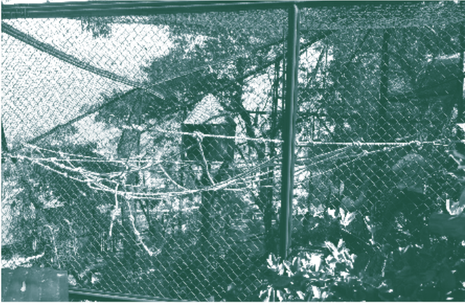
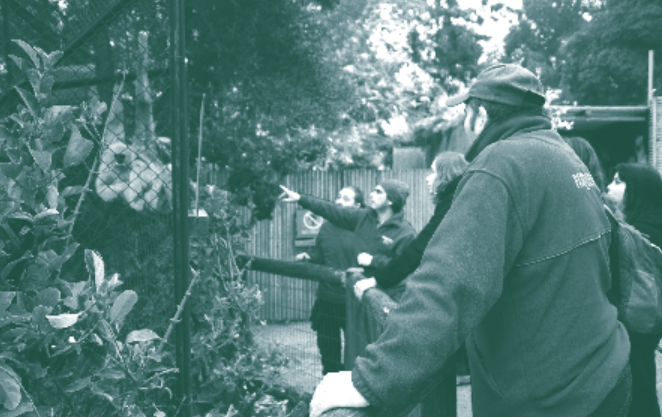
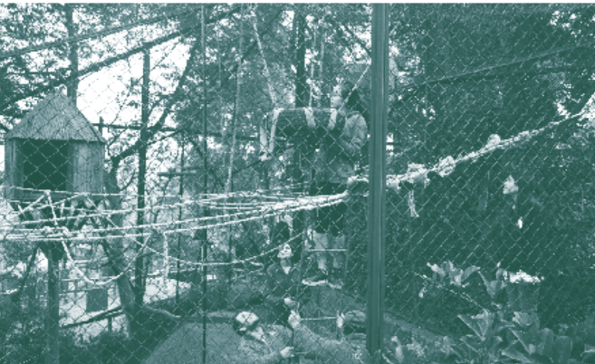
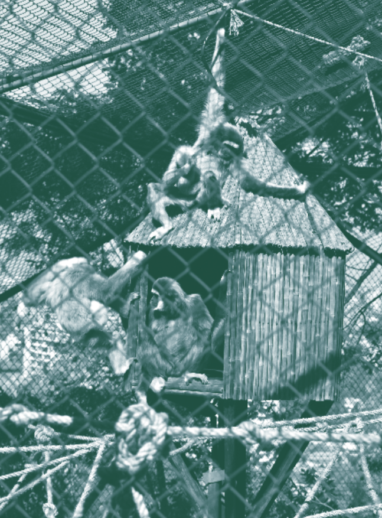

En el presente trabajo describimos un conjunto de desplazamientos prácticos y epistemológicos que experimenta el Taller de Diseño de Interacción (TDI) de la Escuela de Diseño de la Pontificia Universidad Católica de Chile (UC), a partir de su trabajo con el Zoológico Nacional de Chile (ZNdC). Con este propósito, analizamos el caso de un grupo de estudiantes, denominado Las Gibonas, que diseña un dispositivo de enriquecimiento ambiental para los gibones —primates hominoideos— del ZNdC, impugnando el marco epistemológico y metodológico del user-centered design y del problem-solving design.
Basados en el trabajo de la filósofa Isabelle Stengers, entendemos esta impugnación como un evento “idiótico” que tiene la potencia de ralentizar el pensamiento y la acción (2005, p. 994). Consecuentemente, este evento precipita una revisión crítica de las metodologías docentes del TDI y de sus “políticas ontológicas” (Mol, 1999). De este modo, a partir del intento frustrado de comprender a los animales como usuarios, mostramos el modo en que reespecificamos nuestras propias prácticas docentes y marcos epistemológicos. En este contexto, la fragilidad y la performatividad del prototipado mostraron la resistencia de humanos y no-humanos a ser inscritos en categorías ontológicamente estáticas, conformándose, así, una ecología de encuentros y choques ontológicos. Por consiguiente, planteamos que en esta ecología híbrida emergen formas de “correspondencia” (Ingold, 2017) entre humanos y no-humanos, y que esta emergencia explicita las recalcitrancias de los diferentes actores involucrados (Stengers, 1997; Despret, 2008). Estas situaciones —conceptualizadas como un “encuentro cosmopolítico” (Tironi & Hermansen, 2018)— permitirán comprender el prototipado como una instancia privilegiada para ensayar formas de pedagogía para un diseño cosmopolítico.
Finalmente, el ejercicio pedagógico descrito, junto con favorecer una crítica a las políticas ontológicas del user-centered design, provee claves analíticas para hacer del concepto de “cosmopolítica” (Stengers, 2010) un asunto de diseño y, a su vez, hacer del diseño un espacio de encuentro cosmopolítico. Más aun, la cosmopolítica —en tanto ejercicio inventivo y especulativo abierto a entidades sin voz en la política convencional (Stengers, 2010)— encuentra en el prototipado una forma de probar empíricamente sus múltiples posibilidades para crear modos concretos de relación entre humanos y no-humanos. En suma, repensar la cosmopolítica desde la práctica pedagógica del diseño nos invita a materializar lo insospechado e irrealizado, dando forma, con ello, a una acción política más-que-humana.
El año 2003, debido a una reestructuración general de los currículos dentro de la UC, la Escuela de Diseño UC (DñoUC) rompió con el paradigma funcionalista y compositivo —que arrastraba desde su fundación a fines de los sesenta—, y se adhirió formalmente al “giro etnográfico” (Creswell, 2013). DñoUC reestructuró completamente su plan de estudios de acuerdo con estos supuestos epistemológicos y metodológicos, los que enfatizan la necesidad de conocer los requerimien- tos de los usuarios antes de diseñar (Moggridge, 2006; Norman, 1990). Desarrollada originalmente en el ámbito de los sistemas informáticos (Norman & Draper, 1986), esta aproximación incorpora técnicas de levantamiento de información provenientes de las ciencias sociales (e.g., observación y entrevistas) con el fin de estabilizar los perfiles de los usuarios asociados a un problema y a un contexto particular de intervención (Kelly & Matthews, 2014).
Nuevos contenidos complementaron la exigencia de la UC de desarrollar un plan de estudios estructuralmente interdisciplinario, revita- lizando el debate y la revisión de las metodologías habituales. El cambio más llamativo fue la adopción de la etnografía visual como fuente de conocimiento, inspiración y validación de cada proyecto. Por añadidura, estas modificaciones permitieron destronar la primacía que hasta entonces ejercían, sin contrapeso, los principios modernistas de forma, color, ergonomía y análisis estructural, entre otros. De ahí en más, los bocetos, las infografías y los mapas producidos en la escuela se enfocaron en las experiencias, necesidades e interacciones de los usuarios: ya no se buscaba representar objetos y espacios en sí, sino los usos efectivos que los usuarios harían de ellos (Norman, 1990).
Una de las modificaciones más radicales, incorporada modularmente a los talleres, fue el nuevo rol que comenzaron a desempeñar los prototipos en la ideación de proyectos de diseño: éstos dejan de ser representaciones formales de futuros originales —utilizados principalmente para simular el resultado de un proceso de producción industrial real—, y empiezan a concebirse como dispositivos vitales de interacción, producción y corroboración de conocimiento. Ahora, como dispositivos de prueba, aparecían desde las primeras fases del proyecto para testear asuntos que, aunque todavía parciales, resultaban cruciales para solucionar problemas de diseño.
Con estos antecedentes, desde su primera versión en 2004, el TDI incorporó estas estrategias de prototipado en proyectos donde los usuarios humanos eran protagonistas. Dada su habilidad para describir verbalmente experiencias y percepciones, los usuarios humanos —en tanto informantes— representaban a un “otro” culturalmente cercano, parte de una “humanidad compartida” (Thévenot, 1990), y, por ende, capaz de inteligibilizar sus requisitos. En este escenario, los prototipos desempeñan el rol de “traductores culturales” (TuSmith, 1989), constitutivos de una aproximación crítica al user-centered design (Chandrasekaran, 1990). Lejos del preciosismo o la especulación creativa, los estudiantes del TDI debían producir prototipos para materia- lizar hipótesis relativas a problemas específicos asociados a usuarios identificados de manera precisa. Al testear los prototipos, buscábamos corroborar la pertinencia de lo propuesto y anticipar reinterpretaciones inesperadas. Como validación temprana del futuro producto, el prototipo se transformaba, así, en un intermediario indispensable que favorecía un fluido intercambio de palabras y acciones entre el prototipo, sus usuarios y los observadores del proceso.
Con todo, la mayor traba para consumar la potencia pedagógica del prototipado no era la escasa experiencia de los alumnos —en el caso del TDI, novatos de primer año— o sus recursos, muchas veces limitados, sino, más bien, la relación empática y aproblemática que ellos establecían con quienes convocaban para usar y evaluar sus prototipos. Si bien todo proceso de evaluación conlleva rapport, las descripciones de los procesos de prototipado solían mostrar a quienes ejercían de usuarios-evaluadores como entes con una disposición en exceso favorable, menos exigente que con un producto de mercado (en las respuestas primaba la condescendencia por sobre la crítica vigorosa). Además, los usuarios-evaluadores recibían explicaciones y justificaciones que camuflaban los errores de la propuesta. Así, sin necesariamente proponérselo, los jóvenes diseñadores manipulaban el proceso de prototipado.
El acuerdo de colaboración TDI-ZNdC prometió trastocar las condiciones de evaluación de prototipos: los animales, entendidos como máquinas orgánicas, servirían como usuarios despiadados. Sin contar aún con una agenda crítica definida respecto del user-centered design, concebimos esta instancia como un laboratorio de testeo que exigiría a los estudiantes nuevas competencias para prototipar y evaluar sus propias propuestas. Tendrían, pues, que interactuar con usuarios indife- rentes a las explicaciones y justificaciones, pero capaces de manifestar sus preferencias a través de su comportamiento. Dada la inscripción del TDI en el user-centered design, asumimos que para describir el comportamiento animal podríamos continuar usando procedimientos asociados al need finding, como la búsqueda de las interacciones críticas del usuario, el mapa asociativo, la informance o el moodboard.
Desde la primera experiencia de trabajo entre el ZNdC y el TDI en 2013, el método user-centered y su “ontología política” —basada en la idea de destinatarios deficitarios que deben ser asistidos— evidenciaron insuficiencias para enfrentar las complejas cualidades del prototipado con animales. Como hemos documentado en trabajos anteriores (Tironi, Hermansen, & Neira, 2014; Tironi, Hermansen, & Neira, 2016), comenzamos a conceptualizar las prácticas alrededor del prototipo. Nuestro punto de partida conceptual fue la noción de cosmopolítica (Latour, 2002; Stengers, 2010), en tanto instancia de coexistencia más-que-humana. Estos esfuerzos nos llevaron a concebir el prototipado como un “objeto frontera” (Star & Griesemer, 1989) capaz de agrupar diferentes intereses. Asimismo, dado que el prototipo entrega información al fracasar, argumentamos que favorecía una ética del cuidado entre quienes interactúan a través de él (Tironi, Hermansen, & Neira, 2014).
La conceptualización señalada permitió formalizar los primeros hallazgos metodológicos. Por ejemplo, se constató que nuestros “usuarios” no eran sólo los animales, sino, en igual medida, los guardafaunas. Ellos no sólo poseían una relación íntima con los anima- les, también eran —en la práctica— co-diseñadores. Además, se hizo evidente que prefijar un perfil de usuario a los animales —desde las descripciones etológicas disponibles— no resultaba útil. Semejante constatación horadó nuestra confianza en la aplicabilidad de la comprensión científica de los no-humanos a nuestros proyectos de diseño. Por consiguiente, concentramos nuestro foco en las interacciones que emergieron durante la mediación de los prototipos y, al mismo tiempo, en las instancias de co-diseño entre humanos y no-humanos (Tironi, Hermansen, & Neira, 2014).
A pesar de los hallazgos empíricos y conceptuales, mantuvimos el método para diseñar dispositivos funcionales de enriquecimiento ambiental orientados a resolver problemas concretos. Frente al mandato del ZNdC de ayudar a mejorar la calidad de vida de los animales, las estrategias pedagógicas del taller mantuvieron su pivote alrededor del user-centered design. Lo anterior obedeció a dos razones complementarias: primero, esta metodología, ya parcialmente modificada, había demostrado ser útil para cumplir los cometidos prácticos y desarrollar reflexiones teóricas —como concebir el prototipo como catalizador cosmopolítico—; luego, aún no habíamos operacionalizado la cosmopolítica para la práctica pedagógica del diseño.
En este contexto, durante el primer semestre de 2016, un evento acaecido en el primer ciclo de prototipado con los gibones del ZNdC impugnó los protocolos metodológicos del TDI, gatillando una crítica a la ontología política implícita en la pedagogía user-centered design. Las fricciones y recalcitrancias que emergieron dieron paso a desplazamientos epistemológicos y metodológicos que nos empujaron a entender el prototipo más allá de la noción de objeto frontera; llegamos, pues, a concebirlo como un evento de exploración más-que-humana. Específicamente, pasamos de prototipar sobre la base de problemas y preguntas predefinidas a comprender el prototipado como un proceso abierto a la correspondencia interespecie y a la irrupción de lo que luego denominamos como “encuentro cosmopolítico”.
En el marco metodológico del TDI, el grupo de estudiantes de diseño denominado “Las Gibonas” debía desarrollar un dispositivo de enriquecimiento ambiental que se instalaría en el recinto de los cinco gibones que habitan en el ZNdC (una pareja adulta, sus dos hijas y un bebé). Pese a nuestras reflexiones teóricas y a la creciente voluntad de comprender nuestra acción docente desde la cosmopolítica, el método utilizado seguía fuertemente emparentado con el del user-centered design. Así, los objetivos que enfrentaron tanto Las Gibonas como los otros quince grupos del taller fueron los siguientes:
(1) Describir las interacciones entre los involucrados; (2) transformar estas descripciones en preguntas de diseño y, gradualmente, en un brief con la oportunidad de diseño identificada; (3) desarrollar prototipos que materialicen incrementalmente el dispositivo de enriquecimiento ambiental; (4) testear y analizar cada uno de los prototipos involucrando a los destinatarios; y, (5) consolidar el ciclo de prototipado con un dispositivo de enriquecimiento ambiental a instalar de manera estable dentro del recinto animal (Encargo TDI, 2016).
Desde sus observaciones y la revisión de textos etológicos, los estudiantes se aproximaban etnográficamente a las conductas, interacciones y dificultades cotidianas de los animales en los recintos del zoológico. Antes de iniciar los ciclos de prototipado, debían identificar una “oportunidad de diseño”. Aquí, el supuesto es que la “oportunidad de diseño” y la creación de valor surgirán de la “extracción” de conocimiento desde los “usuarios” (Chandrasekaran, 1990; Martin, 2009).
La exigencia de formular una oportunidad de diseño obliga a entrar en el prototipado mediante una hipótesis empíricamente verificable. Bajo esta óptica de problem-solving, buscábamos categorizar actores y asignar necesidades para abordar, mediante el diseño de un producto, sus causas. Con esta lógica causal, pretendíamos reducir al máximo la incertidumbre respecto al ámbito de intervención, asumiendo que los destinatarios eran sujetos deficitarios y que, en nombre de ellos, los expertos debían diseñar una solución.
Fue este principio, la oportunidad de diseño, el subvertido por Las Gibonas. Si bien realizaron adecuadamente observaciones y lecturas, consideraron que su indagación preliminar no les entregaba co- nocimientos suficientes sobre los perfiles de los cinco gibones y sus interacciones críticas; en este escenario, no podían definir una oportunidad ni formular la consecuente pregunta-hipótesis de trabajo. Se abrió, entonces, una controversia entre los objetivos del encargo y el escepticismo de Las Gibonas —respaldado por los guardafaunas— sobre la pertinencia de predefinir una oportunidad de diseño. En esta disyuntiva, Las Gibonas prefirieron apostar por lo inesperado, por aquello que quizás podría suceder. En lugar de operar sobre la base de una certeza, proyectaron un prototipo indefinido, «una red de cuerdas de yute dispuestas de manera aleatoria y básica» (Las Gibonas, 2016).
La indiferencia de Las Gibonas respecto a los procedimientos requeridos en el TDI para encontrar un problema y desarrollar su dis- positivo de enriquecimiento ambiental redundó en un entramado de tensiones entre los involucrados. Además, nuestra sensibilidad cosmopolítica, aún no consolidada metodológicamente, minaba nuestra confianza en el protocolo del TDI.
jetivos del encargo y la desobediencia práctica de Las Gibonas puede describirse usando las figuras del teórico y del artesano: el primero «hace a través del pensar y el otro piensa a través del hacer» (p. 6). A su vez, como docentes, nuestra disyuntiva era si debíamos imponer la lógica del encargo —ciclos de prototipos planificados— o si debíamos permitir a Las Gibonas operar desde la incertidumbre. De acuerdo con nuestra experiencia, el que una idea se imprimiera en un prototipo, comprendido como portador pasivo de planes humanos, hacía menos riesgoso el trabajo de los estudiantes a la hora de conseguir resultados positivos que pudieran ser fácilmente evaluables. Sin embargo, dadas nuestras reflexiones críticas respecto al user-centered design, estábamos menos dispuestos a disciplinar disrupciones.
Según la figura del artesano —como la caracteriza Ingold (2013)—, Las Gibonas, sin declararlo, prototiparon adaptándose a las cualidades del fenómeno que enfrentaban y a los flujos de acontecimientos que surgían. En alianza tácita con los guardafaunas, Las Gibonas tradujeron su desconocimiento acerca de la familia de gibones en un juego de correspondencias sin reglas evidentes: así, su red de cuerdas de yute se emplazó en el espacio aéreo disponible en el recinto. En lugar de apresurarse en albergar certezas sobre los usuarios-gibones, ellas emplearon el prototipo como un instrumento de exploración mediante el cual todos los involucrados —gibones, guardafaunas y estudiantes— se influían mutuamente.
Las Gibonas performan lo que Stengers (2005) llama el “murmullo del idiota”, invitándonos a considerar, sin prerrequisitos, modos inusuales de actuar y pensar. El idiota no pretende llegar a ninguna evidencia, sino, más bien, echar a andar un proceso generativo desde el disenso (Michael, 2012). Esta reticencia al consenso no proviene de una razón perfectamente pensada o de la sospecha de amparar mentiras. El actuar idiótico es capaz de revelar nuestros puntos ciegos desde las antípodas de las explicaciones grandilocuentes que proponen una Verdad. El idiota transforma, pues, certeza en perplejidad (Stengers, 2005).
Si bien el primer prototipo presentaba una configuración abierta (Figura 1), los gibones descubrieron y excedieron sus límites. Como se aprecia en la Figura 2, estos primates sorprendieron a diseñadores y guardafaunas, sobrepasando el área predefinida para su espontaneidad: se posaron en los anclajes que unen la red al recinto y los transformaron en asientos desde donde estudiaron el dispositivo recién implementado antes de entrar en él. Los gibones hicieron de aquello invisible y aparentemente indeseable para el descanso un espacio del cual apropiarse. Por su parte, la agencia idiótica del prototipo consistió en invitar a los gibones a redefinir el uso de aquello que dábamos por sentado y considerábamos como periférico —las piezas metálicas que unen la red de yute con el recinto—, pero sin llegar a dictar lo que correspondía hacer.
 Luego de observar, los gibones entraron en la red y la reconfiguraron, alterando las laxas ataduras entre las cuerdas de yute. En palabras de las diseñadoras, esto «permitió observar cómo algunas cuerdas eran desatadas o reacomodadas de la forma que ellos [los gibones] deseaban, manteniéndonos atentas a sorpresas» (Las Gibonas, 2016)
El inesperado despliegue de los gibones hizo de los testimonios de los guardafaunas respecto a asuntos en apariencia meramente anecdóticos un aporte irremplazable para intentar comprender e interpretar lo que allí sucedía. En parte, el que los guardafaunas hayan descrito a los gibones como “traviesos” animó a Las Gibonas a realizar este prototipo abierto al juego. La recalcitrancia de los guardafaunas, evidente en su familiaridad con los gibones y en su escepticismo ante lo “científicamente correcto”, rebasó sus prácticas cotidianas impregnando el quehacer de las diseñadoras. Este encuentro nos obligó a todos a pensar en presencia de aquello que suele quedar de lado y, de paso, nos conminó a hacernos cargo de las consecuencias impensadas de nuestros propios olvidos.
Con su gesto idiótico, que no pretendía imponer una aproximación teórica alternativa, Las Gibonas, premunidas de su saber situado, precipitaron este encuentro cosmopolítico donde se evidenciaron e imbricaron las recalcitrancias de los involucrados, en especial, aquellas que suelen exceder los marcos descriptivos y analíticos racionales y antropocéntricos, como el del user-centered design. De acuerdo con Stengers (1997), la recalcitrancia subyace a los atributos y las agencias de las entidades estudiadas cuando ellas objetan o se muestran indiferentes o indóciles con los propósitos del investigador —en este caso, con quienes quieren enriquecer su ambiente—. Esta resistencia a la imposición de planes suele minimizarse o neutralizarse en la práctica científica convencional y, por ende, es tenida como un mero obstáculo para la generación de conocimiento científico (Despret, 2008).
En tanto encuentro entre múltiples entidades —primates, docentes, guardafaunas, estudiantes, prototipos o científicos, entre otros—, esta experiencia alienta nuestra redefinición epistemológica: lo central no era ya conocer y transformar las interacciones de los usuarios mediante artefactos introducidos en el recinto, sino, más bien, participar del exceso inexplicable que daba vitalidad a la ecología que constituimos todos quienes participamos de este prototipado.
La implementación del primer prototipo, concebido como una red de yute maleable, sugirió una reconfiguración metodológica que superaba la condición de problem solvers de los diseñadores y de users de los gibones. Esta nueva configuración abrió el proyecto hacia direcciones impensadas y, por añadidura, ralentizó la búsqueda de una solución. El entramado de yute que permitía a los gibones apretar y soltar sus nudos —y, por lo tanto, modificar su estructura— amplificó el ya impredecible devenir de este encuentro. Las Gibonas insinuaron el alcance ontológico del prototipado declarando que «no podemos saber exactamente para quién estamos diseñando sin comprender las reacciones de los gibones a nuestras intervenciones» (Las Gibonas, 2016).
Sin embargo, las interacciones gibones-prototipo no eran directamente aplicables al rediseño del prototipo original, ya que no había una hipótesis explícita que corroborar o refutar. Más aun, los usos del entramado dependían de las preferencias de cada gibón. Por ejemplo,
Sanuk hizo uso casi exclusivo de las zonas más tensas del entramado, Kayak buscó permanentemente espacios de interacción con las cuerdas flojas, Kena parecía más a gusto donde había cuerdas colgando para poder braquear y jugar, y Jorja mostraba preferencia por lugares estables y lisos para estar cerca de su madre (Las Gibonas, 2016).
Estas observaciones volvieron a ralentizar el proyecto. Implicaron dejar de pensar en un prototipo que responda mediante una sola estrategia a las demandas de los cinco gibones. En consecuencia, el entramado del segundo prototipo se concibió estableciendo zonas diversamente programadas con el objetivo de acoger el carácter y las preferencias de cada gibón
El reconocimiento de la singularidad de los gibones impactó éticamente a los involucrados en el proceso de prototipado. En primer lugar, como docentes, intentamos entablar un diálogo diferente con Las Gibonas. Al dar cabida a la producción de prototipos sin mediar preguntas o hipótesis, y al instalar, con ello, la sola condición de describir exhaustivamente el uso de los prototipos, favorecimos el surgimiento de nuevas formas de correspondencia entre diseñadores, guardafaunas y gibones. De hecho, el requisito de delimitar zonas singulares en un mismo entramado unitario fue largamente performado por los gibones y discutido, ampliamente, con los guardafaunas. En palabras de Las Gibonas (2016), entendimos «que para llevar a cabo las zonas diferenciadas, teníamos que trabajar mucho más de cerca con los guardafaunas. Con ellos aprendimos mucho sobre las personalidades de los gibones y cómo ir generando conocimientos más íntimos sobre sus respectivos caracteres».
Así, esta controversia precipitó una recomposición del método del TDI y de las políticas que lo sustentan. Asimismo, se hizo evidente la relevancia de implementar una constante reflexividad sobre el ejercicio de la docencia, el prototipado y sus alcances.
Concretamente, son tres los desplazamientos principales que nos permitieron redefinir la metodología del TDI. Primero, en lugar de centrar el foco de nuestra pesquisa sobre las cualidades definitorias de cada usuario en sus interacciones, comprendimos la urgencia de describir exhaustivamente cómo el prototipado precipita una ecología donde las cualidades de las entidades se revelan en la acción, siempre incierta, de experimentar y experimentarse. Segundo, asumimos que nuestras acciones de diseño no estabilizan comportamientos y, por ende, estamos siempre conminados a prestar atención a la manera en que las recalcitrancias se manifiestan y se corresponden, negociando constantemente su ontología. El prototipo, entonces, no puede ser examinado solamente desde su eficacia y capacidad predictora; también debe ser evaluado de acuerdo con sus efectos políticos y alcances ontológicos. Tercero, establecimos que el enriquecimiento ambiental no proviene exclusivamente de un objeto-prototipo y sus prestaciones a un usuario-animal: la riqueza se constituye durante el proceso de prototipado, a veces, inconmensurable e idiótico, vitalizando así la ecología coyuntural en que acontece.
Si bien el hecho de que el ejercicio estuviera en curso hizo impensable un giro repentino y radical del TDI, esta experiencia nos sugirió una reconfiguración metodológica para nuestra aproximación cosmopolítica al diseño. El primer ciclo de prototipado había asentado la primacía de la ecología sobre el user y de la correspondencia sobre la interacción. Fue un punto de inflexión en la manera en que concebimos el enriquecimiento ambiental. La ralentización idiótica generada por el primer prototipo probó que, en este caso, aquello que enriquece el ambiente no es principalmente el objeto —diseñado para solucionar un problema—, sino el mismo proceso de prototipado y, por supuesto, sus implicancias ecológicas. Esta inflexión permitió a su vez establecer una distinción clave entre el prototipo como objeto y producto, y el prototipado como actividad y proceso (DiSalvo, 2014; Tironi & Hermansen, 2018). En otras palabras, la idea de enriquecer el ambiente de los gibones mediante un artefacto —y las amenidades que éste ofrece— fue superada por la voluntad de co-crear atmósferas de enriquecimiento interespecie mediante la puesta en marcha de experiencias de prueba y conocimiento mutuo. Se trató, pues, de relevar la importancia de las diferentes experiencias, afectos, malos entendidos e intercambios que confluyeron durante el prototipado y que resultaron clave para enriquecer, ambientalmente, la ecología común.
A pesar de nuestra reciente apertura a prototipar desde la correspondencia, Las Gibonas proyectaron el segundo prototipo reconfigurando, desde una hipótesis, el diseño del primero (Figura 4). Dada la intensidad del primer ciclo de prototipado, Las Gibonas creyeron que su “conocimiento situado” (Haraway, 2008) les había proporcionado un saber aplicable al segundo: la familia de gibones podía convivir sobre una misma estructura general; en ella, cada gibón estaba en el campo visual del resto, mientras cada uno de los sectores de la estructura podía ser configurado según las cualidades y preferencias individuales de cada miembro del colectivo.
Sin embargo, esta hipótesis fue refutada por Sanuk, Kayak, Kena, Jorja y el bebé. Las cualidades atribuidas a cada uno por sus interacciones con el primer prototipo se probaron coyunturales: en lugar de corroborar su singularidad, los gibones se mostraron gregarios. Dicho por los guardafaunas, «andan con ganas de estar en familia». Consecuentemente, cada zona del entramado, hipotéticamente compatible con un gibón específico, fue reinterpretada, por el colectivo, como espacio de reunión.
Los siguientes ciclos demostraron que los gibones, gradualmente, naturalizaron el entramado de yute. Esta familiaridad se tradujo en un uso menos intenso pero constante (Figura 5). A pesar de los sucesivos intentos de establecer un diálogo con cada uno de los gibones mediante la configuración de zonas diferenciadas, sus modos de apropiación y reinterpretación del dispositivo siempre pusieron en crisis los supuestos planteados por las diseñadoras. En palabras de un guardafaunas, «los gibones tienen patrones de comportamiento, pero eso no quiere decir que uno pueda predecir cuándo los van a desarrollar».
El enriquecimiento ambiental se reveló como “evento” (Rheinberger, 1997; Wilkie, 2014), como “devenir-con” otros ontológicamente distintos (Haraway, 2008; Ingold, 2017). Diseñadores, guardafaunas, prototipos, docentes y, por supuesto, gibones, consensuaron de hecho un modo de resistir nuestra ambición-ilusión de definir-solucionar. Este vuelco en la comprensión de las capacidades del prototipado para revitalizar ambientes ontológicamente heterogéneos obligó a los docentes del taller a tomar en serio las implicancias políticas del prototipado y reconocer la potencia del proyecto de diseño para co-construir o activar ontologías.
Si bien el trabajo del TDI conlleva producir dispositivos funcionales de enriquecimiento ambiental para los animales del ZNdC, la práctica misma del prototipado evidenció la necesidad de ralentizar y reespecificar nuestros enfoques. Las situaciones de incertidumbre y fricción acontecidas durante este proceso de diseño interespecie nos han obligado a incorporar los excesos (De la Cadena, 2015) de las entidades involucradas, atendiendo las correspondencias (Ingold, 2017) que genera el prototipado en la ecología del ZNdC. Proponemos la noción de encuentro cosmopolítico, basados en el trabajo de Stengers, para “aprehender” (Butler, 2016) estos eventos que irrumpen entrelazando diferentes agencias.
Desde el “giro etnográfico” y con un plan de trabajo centrado en la oportunidad de diseño, constatamos las fricciones y choques que surgen al querer objetivar y predeterminar a personas, sean estas humanas o no-humanas. No obstante, en el proceso de prototipado, las entidades no se definen por cualidades intrínsecas, sino —como expusimos— por las pruebas y las pugnas que emergen en el proceso de ensayo y error. Esta apertura —sostenemos— transforma al prototipado en un lugar de correspondencia (Ingold, 2017), esto es, en «un unirse a otros en una exploración continua, especulativa y experimental sobre cómo podrían darse las posibilidades de vida» (Ingold, 2017, p. 24).
Subrayamos que la idea de una pedagogía cosmopolítica de diseño no fue nuestro punto de partida. Por el contrario, emerge desde la práctica pedagógica en la que éstas y otras ideas van desplegándose y probándose mientras co-diseñamos con destinatarios más-que-humanos. Son eventos situados y circunstanciales, enraizados en pruebas y restricciones, cuyos efectos no pueden anticiparse, pero sí acompañarse. Tal como se mostró, fueron las correspondencias y las fricciones desplegadas durante el proceso de prototipado las que obligaron a ralentizar el enfoque basado en la oportunidad de diseño, a dudar idióticamente de los problemas asumidos y a diseñar atentos a la recalcitrancia. La impugnación de Las Gibonas al protocolo de trabajo nos llevó a reconocer en la indocilidad una posibilidad inventiva, ya no un obstáculo para el diseño; ante todo, nos permitió enfrentarnos a un espacio de disenso e indeterminación que nos invitó a ensayar otras formas de relación interespecie.
Siguiendo a De la Cadena (2015), lo cosmopolítico no puede predefinirse, no es un enunciado que pueda adosarse ex ante, pues irrumpe situadamente. De acuerdo con esta línea de pensamiento, Stengers (2005) enfatiza que la cosmopolítica no se define, sucede. La precipitan las dudas sobre las buenas razones y los consensos dados por sentados. Más allá de la diversidad, el gesto cosmopolítico celebra la inconmensurabilidad y los eventos recalcitrantes, aquellas voces que permanecen bajo las sombras de la política convencional (Stengers, 2005, p. 996). En oposición a la esfera pública “habermasiana”, heredera del cosmopolitismo, cuyo protagonista es un ciudadano letrado, racional, dispuesto a construir consenso mediante la práctica dialógica, en las situaciones cosmopolíticas el protagonista es el «idiota, que Deleuze toma prestado de Dostoievski para transformarlo en un personaje conceptual, es el que siempre ralentiza a los demás, el que resiste la manera consensuada en que se presenta una situación y en que el pensamiento o la acción son movilizados por las emergencias [cursivas añadidas]» (Stengers, 2005, p. 994).
¿Cómo llevar la cosmopolítica a la acción? O, en otras palabras, ¿cómo diseñar espacios para intervenciones cosmopolíticas? Creemos que una de las consecuencias derivadas del trabajo TDI-ZNdC es, precisamente, reflexionar acerca de la relación entre prácticas pedagógicas de diseño y la cosmopolítica como espacio para diseñar lo político más allá de lo humano (Kohn, 2013; Binder, Brandt, Ehn, & Halse, 2015; Lenskjold & Olander, 2016; Lenskjold & Jönsson, 2017). Las implicancias prácticas del diseño interespecie han transformado progresivamente el TDI en un laboratorio para un diseño cosmopolítico. En este sentido, la revisión de las políticas ontológicas que subyacen al user-centred design ha resultado de la impugnación, de las manifestaciones de indiferencia y de la recalcitrancia de quienes aún resisten el programa de un diseño productivizado. Por lo mismo, el desafío no está solamente en comprender cómo los humanos “representan” animales-usuarios de diseño (Tironi, Hermansen, & Neira, 2014), sino en examinar cómo humanos y no-humanos hacen mundos a través de la ecología que conforma la práctica de prototipar.
Aproximarse al diseño, ya no desde la oportunidad o la necesidad, sino desde las correspondencias, afectos y recalcitrancias, plantea un desafío ético-político sobre cómo propiciar formas de diseño para la intimidad y el “cuidado” (ver Calvillo González & Mesa del Castillo, en esta edición) interespecie. Asimismo, esta aproximación interpela a las epistemologías antropocéntricas del diseño e invita a considerar seriamente los efectos de la especulación para la producción de conocimiento (Savransky, Wilkie, & Rosengarten, 2017).
Creemos que el prototipado puede transformarse en una herramienta pedagógica para promover espacios de duda y cuidado, y para dotar de voz política a aquellos seres que “exceden” (De la Cadena, 2015) los marcos político-metodológicos hegemónicos (Lury & Wakeford, 2012). Concebir el prototipado como una forma de “enactar” futuros políticos (Mazé, 2016; Tironi, 2017) es también una manera de desafiar la doxa universitaria del diseño centrado en el usuario y de ensayar, consecuentemente, un diseño capaz de invocar lo que denominamos como encuentros cosmopolíticos (Tironi & Hermansen, 2018). Desde nuestra práctica de investigación y docencia, el ejercicio del prototipado se vislumbra como una forma de acoger, en tanto intervención que se abre a lo potencial (Imhoff, Quiros, & Toledo, 2016; Savransky et al., 2017), aquello que está por definirse, más allá del verbo. El potencial especulativo del prototipado permite concebir un diseño que no busca unificar diferencias, sino amplificar disensos y murmullos idióticos, componente constitutivo de lo cosmopolítico. Este desafío de repensar las capacidades del diseño para ampliar lo que se considera como político (Domínguez Rubio & Fogué, 2015), exige escenarios reales —como es el caso de la institución zoológica— donde las posibilidades para especular emergen desde las experiencias, los problemas y las diferencias de los involucrados.